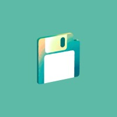
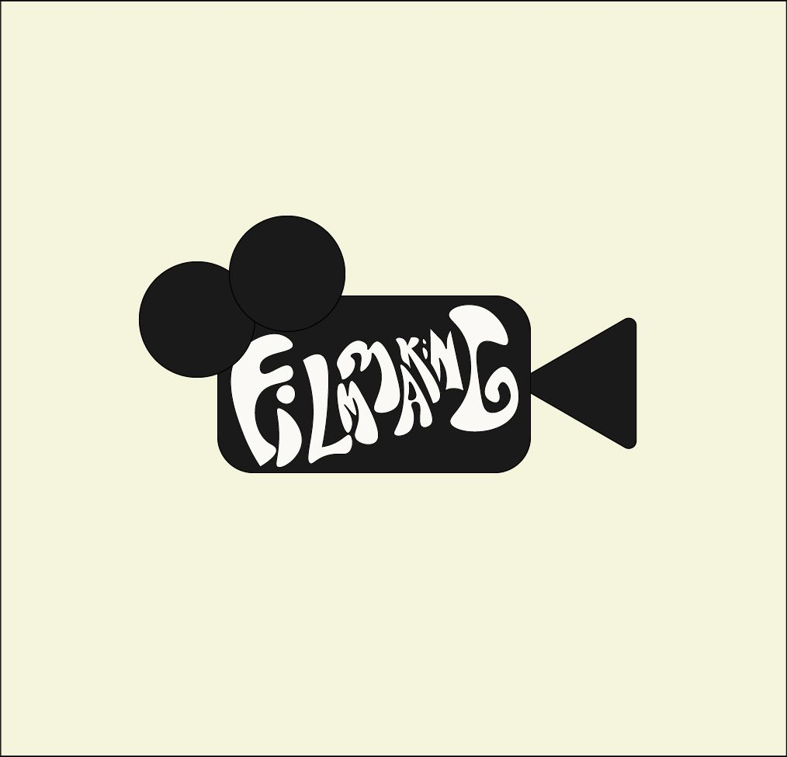
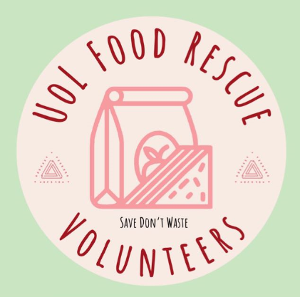
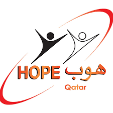
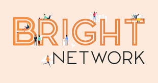
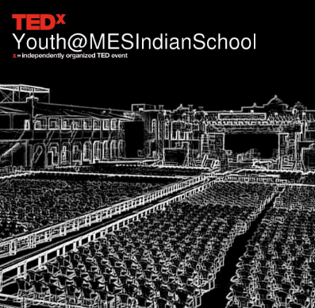

Experience
Social Secretary of Computer Science Society
Dec 2023 - Present
Location: Leicester, UK
• Awarded Student Group Of The Year for 2023/24 by University Of Leicester’s Student Union.
• Conducted Social Events in collaboration with diverse teams. Involved in all stages of planning, including budgeting and logistics.
• Executed a hackathon in partnership with IBM, coordinating logistics, scheduling, and stakeholder communication to ensure a successful, impactful event for over 100 students focused on innovation and problem-solving.
• Managed a student visit to IBM's Leicester office for 30 students, coordinating logistics and schedules. Collaborated with team members and IBM staff demonstrating alliance and clear communication for a successful and insightful event.
• Accomplished a Collaboration with 5 societies to plan and organize an event, “STEM Sports Day”.
• Successfully Proposed and Created a Ball for 100 students and a Trip to Barcelona, Spain with 20 students
Founder and President of Filmmaking Society
Oct 2024 - Present
Location: Leicester, UK
• Founded the Filmmaking Society to foster a community of filmmakers and photographers.
• Planned and Produced a reel for University Of Leicester’s media team promoting Digital Open Day.
• Collaborated with other societies to film content at their events.
• Hosted film screenings and social events for people to meet other filmmakers
Volunteer at Food Rescue Volunteers Society
Location: Leicester, UK
Dec 2023 – Dec 2024
• Operated collaboratively with campus food outlets to facilitate the distribution of leftover meals to students in need at the end of each day.
Volunteer Intern at HOPE Qatar Centre For Special Needs
Location: Doha, Qatar
Jul 2024 – Aug 2024
• Guided the IT department and the teachers during the computer lab sessions.
• Contributed in helping the teachers handle the class of 20 students and the activities like Arts and Crafts, Food Art, Dance and Computer Lab sessions.
• Photographed the Arts and Crafts Activities and presented the photos to teachers and parents.

IEUK Technology Intern at Bright Network
Location: Remote
Jun 2024 – Jul 2024
• Presented and documented a roadmap on a mobile app update for a business.
• Used the data given and collected to do Data Analysis on the users, the app and competitors.

Social Media Admin at TEDXYouth@MESINDIANSCHOOL
Sep 2020 – Feb 2021
Location: Doha, Qatar
• Executed a targeted Instagram campaign for event promotion, ensuring consistent messaging with attention to detail. Utilized strong diplomatic skills to create engaging content and infographics that proficiently attracted the target audience of 400 students.
• Collected data from 400 students in Instagram to understand opinions and interest about the event and implemented the data to improve the event.